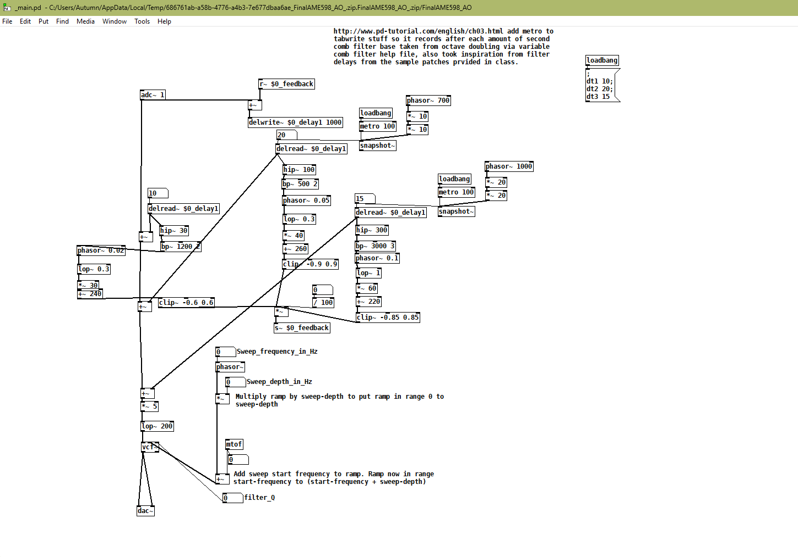

Sound Distortion Generator
Your browser does not support HTML video.
This project was created to take the audio from a constantly running generator and apply various distortion effects to create a unique sound experience. Utilizing BELA, PD Data, a live feedback microphone, and surround sound speakers.
PD Data Patch
